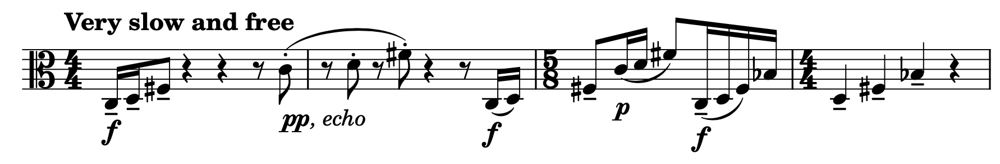
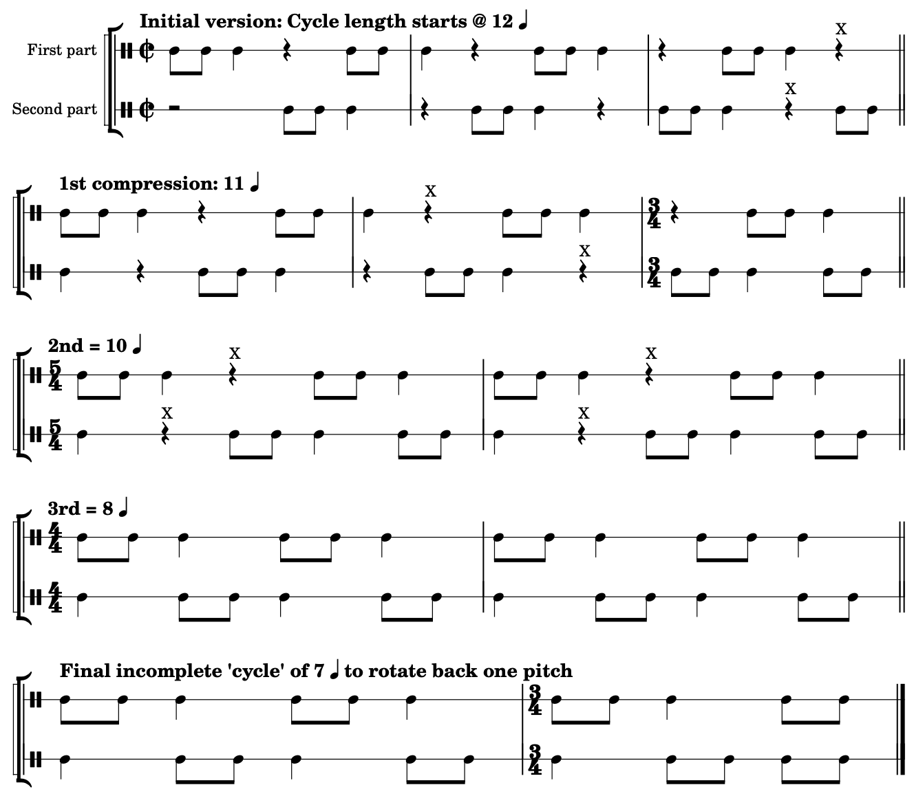

Open Music Theory：繁體中文版
用十二音作曲
重點整理
到目前為止，我們看過音列與序列特性的抽象概念，也看過它們在既有作品中的用法。現在，換我們寫一首新曲，補上實作的一面。要再強調一次：和任何音樂風格或技法一樣，用十二音音列作曲有無限多種途徑，所以這只能是一個例子，不能代表所有可能，正如單一分析也無法代表全部分析。不過，實際用音列寫作，仍能清楚示範如何往返於理論與實踐。我們可以把巴爾托克精彩的《小宇宙》當作理想：篇幅短、創作課題明確，同時又是饒有趣味的真正樂曲。
這裡先選擇並檢視音列，再開始寫一些段落，至少寫出各段的開頭。我們會用不同方式處理同一材料，尤其比較序列操作相對「自由」與「嚴格」的做法。
查看英文原文
Key Takeaways
So far, we’ve seen some rows and serial properties in the abstract, and their usage in some existing pieces. Now let’s complement that by writing a new piece. It’s worth reiterating that (like any other musical style or technique) there are infinitely many ways of approaching composition with twelve-tone rows, and so this can only be an example and not representative—indeed no more than a single analysis can be. All the same, an example of writing with rows will be a helpful illustration of how we can navigate between theory and practice. We can aspire to something like Béla Bartók’s marvelous Mikrokosmos collection: short pieces with a clear compositional "brief" that are also rather interesting as "real" pieces.
Here, we’ll start by choosing and examining rows, then go on to write at least the start of some passages that vary in how they approach the same material, especially in terms of how relatively "free" or "strict" they are in their use of serial processes.
選擇音列
先挑幾個音列來用。選擇音列可以有很多動機；我比較想找的是：
- 內部具有「有趣」特性……
- ……而且這些特性能引出某些作曲策略；
- 同時，在既有作品中還相對少被探索的音列。
對我而言，「全三音組音列」很符合這些條件。Alan Marsden（2012，162頁）的定義是：「把十二音序列視為環狀時，十二組連續三個音高類所構成的集合，包含全部十二種三音集合類。」[1]
Marsden指出，這樣的環狀音列共有四種類型，以下各列一個代表：
譯註來源：Alan Marsden：Final response，作者公開預印本，第4–5個PDF頁
- [0, 2, 6, 10, 5, 3, 8, 9, 11, 7, 4, 1],
- [0, 2, 6, 10, 11, 9, 8, 3, 5, 1, 4, 7],
- [0, 2, 6, 10, 7, 4, 11, 9, 8, 3, 5, 1],
- [0, 2, 6, 10, 1, 4, 5, 3, 8, 9, 11, 7]
以下將它們寫成從C開始的十二音音列，並在下方列出、標示對應的三音組：
All-Trichord Rows＝全三音組音列。
- 說明：上譜表是音列，下譜表是三音組；
- 每個三音組由正上方的音與其後兩音組成，例如第一組C、D、F♯。
音列首尾相接，末尾兩組由開頭音補齊。
下方文字先列集合原型，例如026，再列Forte集合類編號，例如3-8。
- 原圖第1列最後一組誤標013／3-2，應為012／3-1；
- 第2列最後一組誤標025／3-7，應為027／3-9。
第4列第8組的3-5B，在本章合併移位與倒影的集合類層級歸為3-5。
以下是依原音列核算的完整標籤對照：第1列依序：026（3-8）、048（3-12）、015（3-4）、027（3-9）、025（3-7）、016（3-5）、013（3-2）、024（3-6）、037（3-11）、036（3-10）、014（3-3）、012（3-1）。
第2列依序：026（3-8）、048（3-12）、015（3-4）、012（3-1）、013（3-2）、016（3-5）、025（3-7）、024（3-6）、014（3-3）、036（3-10）、037（3-11）、027（3-9）。
第3列依序：026（3-8）、048（3-12）、014（3-3）、036（3-10）、037（3-11）、027（3-9）、013（3-2）、016（3-5）、025（3-7）、024（3-6）、015（3-4）、012（3-1）。
第4列依序：026（3-8）、048（3-12）、037（3-11）、036（3-10）、014（3-3）、012（3-1）、025（3-7）、016（3-5）、013（3-2）、024（3-6）、015（3-4）、027（3-9）。
全三音組音列，FourScoreAndMore製作。
標準十二音音列包含全部十二個音高類，而包含全部十一種有序音高類音程的「全音程音列」也已是熟悉、常見的類型。循此思路，全三音組音列可以視為這些音列特性的進一步延伸。如果十二音創作的目標，是盡可能拓展材料的多樣性，它們確實很有用。
或許最引人躍躍欲試的是，Marsden最後說，他「始終未能找到令人信服的方法，把它用於作曲」（2012，163頁）。對某些作曲家而言，這種話實在很難抗拒。
查看英文原文
Choosing Rows
Let’s start by choosing some rows to work with. Among the many possible motivations for choosing rows, I’m inclined to seek out those that:
- Have "interesting" internal properties …
- … that are suggestive of some compositional strategies
- And have been relatively under-explored in previous pieces.
For me, the "all-trichord" rows are a great fit for these criteria. Alan Marsden (2012, 162) defines these as "12-note series which, when treated as circular, [contain] in the 12 sets of 3 consecutive pitch classes all the 12 possible classes of trichord."[1]
Marsden has demonstrated that there are exactly four distinct forms of this row:
- [0, 2, 6, 10, 5, 3, 8, 9, 11, 7, 4, 1],
- [0, 2, 6, 10, 11, 9, 8, 3, 5, 1, 4, 7],
- [0, 2, 6, 10, 7, 4, 11, 9, 8, 3, 5, 1],
- [0, 2, 6, 10, 1, 4, 5, 3, 8, 9, 11, 7]
Here they are as twelve-tone rows starting on C, and also with the corresponding trichords given and labeled below:
All-trichord rows by FourScoreAndMore
Given that all standard tone rows feature all twelve pitches and the "all-interval" rows featuring all eleven intervals are also familiar and common, you could view the all-trichord rows as a logical extension of these familiar row properties. They are certainly useful insofar as our goal in composing with twelve tones is to pursue maximal variance.
Perhaps most compellingly of all, Marsden concludes that he "never did find a convincing way to make use of this in composition" (2012, 163). To some composers, that kind of comment is irresistible.
創作範例
以下透過幾個創作範例與討論，展示如何由音列產生樂曲的音高材料。
查看英文原文
Example Compositions
Following are several example compositions and discussions of how a row can be used to generate the pitch material for a musical composition.
一段相對自由的幻想曲
先從最不嚴格的做法開始。我們把使用這些音列、強調彼此重疊的三音組，視為足夠的限制；其他事項留給自由創作，包括：
這些起始條件可以用許多方式實現。以下是一段中提琴獨奏的開頭，從第一個三音組移向第二個；這兩組正是前列四個音列開頭共同具有的材料：

- Very slow and free＝非常緩慢、自由地；
- pp, echo＝極弱，如回聲；
- f＝強；
- p＝弱。
- 開頭音高C、D、F♯形成第一個三音組，稍後移向D、F♯、B♭；
- 重複、音域、奏法與節奏仍自由處理。
許多作曲家，不論是否使用序列技法，都覺得先設下這類限制很有幫助，部分原因正是它讓你能自由處理更細部的問題。限制之內，仍有廣闊的發展可能。例如，可以塑造逐漸上升至高點、再下降的整體輪廓；也可以偏好一段靜止、明顯受到約束的音樂。選擇仍然很開放。
查看英文原文
A (relatively) free fantasia
Let’s begin with the least strict approach. Here we’ll consider the use of these rows and the emphasis on overlapping trichords as enough of a constraint, leaving to free creative choice all other matters including:
- Repetition of a note or a trichord (but perhaps not other groupings like dyads and tetrachords).
- The specific rhythms and phrasings (as long as they typically emphasize grouping in threes).
- Registral and timbral variety for expressive range.
That starting premise could be realized in any number of different ways. Here’s an example opening for solo viola that moves from the first trichord to the second (the two that are common to the start of all four rows as set out above):
Many composers—serial and otherwise—find it helpful to set initial constraints in this way, partly because it can give you license to approach the more detailed matters freely. The restrictions leave open a wide range of possibilities for how to proceed. For instance, we might like to create an overall contour that works up to a high point and then comes back down from there. Alternatively, we might prefer a static and demonstrably constrained passage. It’s wide open.
以程序推進的「無窮動」
也可以用更活潑、節奏感更強的方式，處理這些重疊三音組。例如，採取某種極簡主義式的無窮動（moto perpetuo）：持續反覆一個三音組許多次，再進到下一組。先讓音符連續流動，依序反覆三音組，也就是第1、2、3、1、2、3……音。要移到下一組，只需把第2音當作新循環的開頭，改為第2、3、4音。因此，在持續反覆1–2–3時，某次演奏到1–2–3–1，接下來的2便開啟2–3–4的新循環。
完成任意次三音循環，再多奏一音，就能作這種切換：例如4音（一輪加1音）、7音（兩輪加1音）、10、13、16音，依此類推。這也引出節奏與拍節的考量。假設把主要以三音分組的音型，放進[latex]\mathbf{^2_2}[/latex]這類二拍子，便會形成熟悉而有吸引力的三對四拍節衝突。選什麼拍號，都可能需要因應循環長度作調整：有些長度符合拍節，有些則打斷它。例如，以八分音符為單位，在[latex]\mathbf{^2_2}[/latex]中，4音剛好是一個二分音符拍；16音則是兩小節，也就是四個拍、每拍四個八分音符。相較之下，10音可能需要改變拍節，例如寫成[latex]\mathbf{^5_4}[/latex]；7音則需要在更細的拍節層級安排，例如[latex]\mathbf{^7_8}[/latex]。
以下是一段弦樂四重奏，實現了其中一些想法。每次循環都由中提琴與大提琴的撥奏清楚標示，音型也在兩部小提琴之間交接，順便讓演奏者喘口氣！大部分循環長16音，但也有較短的循環，用來打破流動，或讓某些三音組比其他組停留更久。選擇哪些組，也仍是自由的。
- Moto perpetuo＝無窮動；
- 二分音符＝120；
- pizz.＝撥奏；
- New cycle begins (piece continues)＝新的循環開始（樂曲繼續）。
- 譜面依序可見二二拍、二四拍、五四拍、七八拍等配置；
- f與p為強、弱，漸強線表示逐步增強。
查看英文原文
A process-driven "moto perpetuo"
We could also approach these overlapping trichords in a more vigorous, rhythmic way. For instance, we could have a kind of minimalist moto perpetuo style, insistently repeating each trichord numerous times before moving on to the next one. Let’s start with a continuous stream of notes, repeating our trichord in order (so with pitches 1-2-3-1-2-3- …). To move on to the next trichord, we can simply take the second pitch as the start of a new cycle for pitches 2-3-4. So if we’re repeating pitches 1-2-3-, then at some point we have a 1-2-3-1- and the following 2 marks the beginning of a 2-3-4- cycle.
We can make this change after completing any number of 3-note cycles plus 1 note: that is, after 4 notes (one cycle +1), or 7 (two cycles), 10, 13, 16, and so on. This should get us thinking about rhythm and meter. Say we put this predominantly 3-grouping pattern into a duple meter like [latex]\mathbf{^2_2}[/latex]. That would lend the music an attractive and familiar 3-against-4 metrical dissonance. Whatever meter we choose, we’ll have to make adjustments for some of the cycle lengths: some will "fit" with the meter, and others will disrupt it. For instance, in our duple meter, the 4 cycle could be "one beat" (e.g., four eighth notes as one beat in [latex]\mathbf{^2_2}[/latex]) and 16 could be 2 measures (4 x 4 beats). By contrast, the 10 cycle means breaking up the meter a bit (e.g., with a [latex]\mathbf{^5_4}[/latex]), and the 7 stretches down to another, lower metrical level ([latex]\mathbf{^7_8}[/latex]).
Here’s a short passage realizing some of these ideas for string quartet, with each cycle now clearly marked both by viola and cello pizzicato, and by moving the pattern from one violin to the other (which also gives each player a welcome break!). Most of the cycles are 16 notes long, but there are some shorter ones too to break up the flow, and to dwell on some of the trichords more than others. Again, the choice of which is free.
一段嚴格安排的賦格
最後試試較嚴格的做法：不重複音高，並同時使用不只一條音列。我們把它放進經典的嚴格複音曲式——賦格——之中。[2]可以直接把一條音列寫成十二音主題，再取一條與主題具有六音組互補組合性的音列作為對題。主題與對題要一起演奏，因此六音組的互補組合性，可以確保每半個音列循環內，兩者合起來不重複任何音高類。
也可以進一步確保第三、第四聲部加入後，在三音組這個層級上，仍不重複音高類。這幾條音列本身沒有我們所需的三音組互補組合性，但既然已有一對六音組互補的音列，就能調整每條音列中的三音組，產生新的一對，與原先兩條結合，使每一組並列的三音材料都涵蓋十二個音高類。
更精確地說，直接交換三音組會破壞原音列次序，失去其「全三音組」特性；不過，還有一種方式能達到相同的集合分配效果，同時維持與原音列一致的環狀結構。「交換每個半部的兩個三音組」，會把1、2、3、4變成2、1、4、3。若要保留原有的環狀鄰接關係，可以先將整條音列逆行，再循環移動半條音列；這時每個三音組內部的次序也會反向。以上行半音音階音列作示意，結果如下：
| 音列 | 1 | 2 | 3 | 4 | 5 | 6 | 7 | 8 | 9 | 10 | 11 | 12 |
| 逆行後循環移動6音 | 6 | 5 | 4 | 3 | 2 | 1 | 12 | 11 | 10 | 9 | 8 | 7 |
把這個程序分別套用到原音列及其六音組互補配對，就能得到下列配置：
| 1.原音列（同上） | 1 | 2 | 3 | 4 | 5 | 6 | 7 | 8 | 9 | 10 | 11 | 12 |
| 2.六音組互補音列 | 7 | 8 | 9 | 10 | 11 | 12 | 1 | 2 | 3 | 4 | 5 | 6 |
| 3.第1列逆行後循環移動（同上） | 6 | 5 | 4 | 3 | 2 | 1 | 12 | 11 | 10 | 9 | 8 | 7 |
| 4.第2列逆行後循環移動 | 12 | 11 | 10 | 9 | 8 | 7 | 6 | 5 | 4 | 3 | 2 | 1 |
請注意，以下各範圍內都不會重複音高類：
- 四條音列各自內部；畢竟它們本來就是十二音音列。
- 原音列與互補音列的前半合起來、兩者後半合起來，以及經逆行與循環移動所得那一對的前半或後半。
- 各組相對應、互不重疊的三音片段合起來，例如四條音列各自第1–3音的總和。
只要先有一對六音組互補的音列，上述構造就能由分組關係保證這個特性；很值得收進作曲的工具箱。
查看英文原文
A strict, fixed fugue
Finally, let’s explore a stricter approach, without note repetitions, and with more than one row at a time. Let's do this in the context of the classic strict polyphonic form: the fugue.[2] We could make one of the rows directly into a twelve-tone subject and take a countersubject that’s hexachord-combinatorial with this subject. The subject and countersubject are going to be played together (by definition), so hexachordal combinatoriality will ensure that we don’t repeat a pitch within the half-cycle.
We could also ensure that pitches aren’t repeated even when third and fourth voices enter—so, at the trichord level. Our rows aren’t trichord-combinatorial, but given our existing hexachord-combinatorial pair, we can get there by swapping the trichords of each row to make a new pair that, combined with the existing two, will see all twelve pitches in each set of trichords.
More precisely, simply swapping trichords would break the ordering of these row and mean losing the defining "all-trichord" property, though there’s still a way we can achieve the same thing while retaining a structure consistent with the original row. Note that "swapping trichords of each half" means taking trichords 1,2,3,4 and ending up with 2,1,4,3. To get from one to the other while retaining the same ordering, we can retrograde and rotate by a half-cycle. So, for instance, for an ascending chromatic scale row, we’d get this:
| Row | 1 | 2 | 3 | 4 | 5 | 6 | 7 | 8 | 9 | 10 | 11 | 12 |
| Retrograde and rotate by 6 | 6 | 5 | 4 | 3 | 2 | 1 | 12 | 11 | 10 | 9 | 8 | 7 |
So, applying this process to the initial row and a hexachord-combinatorial pair, we can get a solution like the following:
| 1. Initial row (as above) | 1 | 2 | 3 | 4 | 5 | 6 | 7 | 8 | 9 | 10 | 11 | 12 |
| 2. Hexachord-combinatorial pair | 7 | 8 | 9 | 10 | 11 | 12 | 1 | 2 | 3 | 4 | 5 | 6 |
| 3. R-rotation of 1. (as above) | 6 | 5 | 4 | 3 | 2 | 1 | 12 | 11 | 10 | 9 | 8 | 7 |
| 4. R-rotation of 2. | 12 | 11 | 10 | 9 | 8 | 7 | 6 | 5 | 4 | 3 | 2 | 1 |
Note that there’s no repetition of a pitch within:
- Any of the four rows by themselves (of course, they're twelve-tone rows).
- The first half of the initial row and the hexachord-combinatorial one, the second halves of those two rows, or the first or second halves of the rotated pair.
- Any of the discrete trichord subsets (e.g., pitches 1–3 of all rows combined).
This property is true by definition for any row, so it’s worth keeping in the compositional box of tricks.
把互補組合性用於實作
決定要用互補音列配對很容易，但必須先知道，所選音列至少有一條真的具有這項特性。事實上，四條都有，只是程度不同：每條音列至少有一些循環起點，能形成倒影的六音組互補組合。別忘了，環狀音列改變起點，仍保有關鍵的全三音組特性。第三、第四條音列符合條件的循環起點，比第一、第二條稍多。以第三條為例，列表如下：
| 循環移動 | 音列 | 倒影互補配對 |
| 0 | [0, 2, 6, 10, 7, 4, 11, 9, 8, 3, 5, 1] | I3 |
| 1 | [2, 6, 10, 7, 4, 11, 9, 8, 3, 5, 1, 0] | I5 |
| 2 | [6, 10, 7, 4, 11, 9, 8, 3, 5, 1, 0, 2] | |
| 3 | [10, 7, 4, 11, 9, 8, 3, 5, 1, 0, 2, 6] | |
| 4 | [7, 4, 11, 9, 8, 3, 5, 1, 0, 2, 6, 10] | I2 |
| 5 | [4, 11, 9, 8, 3, 5, 1, 0, 2, 6, 10, 7] | |
| 6 | [11, 9, 8, 3, 5, 1, 0, 2, 6, 10, 7, 4] | I4 |
| 7 | [9, 8, 3, 5, 1, 0, 2, 6, 10, 7, 4, 11] | I10 |
| 8 | [8, 3, 5, 1, 0, 2, 6, 10, 7, 4, 11, 9] | |
| 9 | [3, 5, 1, 0, 2, 6, 10, 7, 4, 11, 9, 8] | |
| 10 | [5, 1, 0, 2, 6, 10, 7, 4, 11, 9, 8, 3] | I4 |
| 11 | [1, 0, 2, 6, 10, 7, 4, 11, 9, 8, 3, 5] |
下圖從音列的第二音起讀，示範每次再移動一個三音組，仍可保有倒影互補組合性，也就是上表的循環移動1、4、7、10：

- Initial row (no rotation)＝本圖選定的起始音列（尚未再移動）；
- Hexachord-combinatorial pair＝六音組互補配對；
- Both rows in retrograde and rotated by 6＝兩列皆逆行後循環移動6音；
- Rotate +3 (one trichord) and adjust the transpositions for combinatoriality＝循環移動3音（一個三音組），並調整移位以維持互補組合性；
- Now I2＝此時倒影形式為I₂；
- Rotate +/−6＝循環移動6音；
- Rotate +9 (−3)＝循環移動9音，等同反向移動3音。
- Trichord＝三音組；
- A、B、C、D標四組素材；
- i、r、ri分別表示倒影、逆行、逆行倒影。
為了運用這項特性，可以從這些三音組／循環起點中的任何一個開始。這裡選擇第二音，部分是因為它以增三和弦起頭，很適合作為出發點：用一個對稱的三音組，開展主題與對題互為倒影的賦格風段落。
查看英文原文
Combinatoriality in practice
It’s all very well deciding that we’re going to use combinatorial pairs, but we need to know that at least one of our rows actually has this property. In fact, they all do, though not equally: each row has at least some rotations that are inversion-combinatorial (remember that rotating these rows retains the all-important all-trichord property!), though rows 3 and 4 have slightly more such rotations than 1 and 2. Here’s the list for row 3, for instance:
| Rotation | Row | Combinatoriality |
| 0 | [0, 2, 6, 10, 7, 4, 11, 9, 8, 3, 5, 1] | I3 |
| 1 | [2, 6, 10, 7, 4, 11, 9, 8, 3, 5, 1, 0] | I5 |
| 2 | [6, 10, 7, 4, 11, 9, 8, 3, 5, 1, 0, 2] | |
| 3 | [10, 7, 4, 11, 9, 8, 3, 5, 1, 0, 2, 6] | |
| 4 | [7, 4, 11, 9, 8, 3, 5, 1, 0, 2, 6, 10] | I2 |
| 5 | [4, 11, 9, 8, 3, 5, 1, 0, 2, 6, 10, 7] | |
| 6 | [11, 9, 8, 3, 5, 1, 0, 2, 6, 10, 7, 4] | I4 |
| 7 | [9, 8, 3, 5, 1, 0, 2, 6, 10, 7, 4, 11] | I10 |
| 8 | [8, 3, 5, 1, 0, 2, 6, 10, 7, 4, 11, 9] | |
| 9 | [3, 5, 1, 0, 2, 6, 10, 7, 4, 11, 9, 8] | |
| 10 | [5, 1, 0, 2, 6, 10, 7, 4, 11, 9, 8, 3] | I4 |
| 11 | [1, 0, 2, 6, 10, 7, 4, 11, 9, 8, 3, 5] |
And here’s a demonstration of the rotation starting on the second pitch means we can rotate around the trichords and still have I-combinatoriality (i.e., rotations 1, 4, 7, 10 from the table):
We could start on any one of those trichords/rotations for this property. Of those options, let’s start on the second pitch, partly because it gives us the augmented triad, which seems like a good place from which to launch: a symmetrical trichord for a fugato with inverse-related subject and countersubject.
真正寫成音樂！
接下來就是寫音樂了！我們用不同聲部、進入時點與節奏，讓各音列清楚區分。開頭的呈示段（第1–8小節）包含：
- 將主題分成四個三音組，並使用類似前面無窮動的三對四音型。
- 每個聲部都以主題進入，但每次提高一個半音。
- 對題以互補的節奏，逐步填滿空隙。
呈示段之後，探索前述三音組循環移動的特性：大提琴持續循環演奏相同四個三音組，每次相鄰的音列陳述重疊一個三音組，帶出其他聲部中相對應的循環版本，如上方音列表所示。此外，由於大提琴維持相同音高，其他聲部就必須移到新的音高位置，才能保有互補組合性；這與上圖固定最上方譜表的音高、調整其他譜表的做法不同。
如賦格風段落常見、甚至幾乎難以避免的發展，織體會逐漸密集。配合這個趨勢，本例也提高變化速度：一方面逐漸加速（poco a poco accelerando），另一方面依下圖反覆刪除休止符，縮短樂句長度：

- First part／Second part＝第一／第二聲部；
- Initial version: Cycle length starts @ 12＝初始版本，循環長12個四分音符；
- 1st compression: 11＝第一次壓縮，11拍；
- 2nd＝10＝第二次，10拍；
- 3rd＝8＝第三次，8拍；
- Final incomplete cycle of 7 to rotate back one pitch＝最後以7拍的不完整循環，將起點往回移一音。
- 每個X標下一次刪去的休止符；
- 第三次從10拍減至8拍，並不是每次都只減一拍。
查看英文原文
Actual music!
All that remains is to write the music! Let’s keep the rows separate with different parts, points of entry and rhythms. We begin with an exposition (mm. 1–8) that involves:
- A subject broken up into its four trichords, and with a 3-against-4 pattern similar to the one used in the moto perpetuo.
- Each voice entering with the subject (of course), but transposed up a semitone each time.
- Countersubjects with complementary rhythms progressively filling in the gaps.
After the exposition, we explore the trichord rotation property discussed above: the cello plays the same four trichords in a loop, with the rows overlapping by one trichord each time. This leads to the equivalent rotations of the row in other parts (as shown in the row chart above). Additionally, because the cello has kept the same pitches, the other parts also have to transpose to new pitch levels to preserve the combinatoriality (unlike in the chart above where the top staff stays on the same pitch level and the others adjust).
As is typical (indeed almost inevitable) for a fugato, the passage builds in density. Matching that, this realization also increases the rate of change both through a poco a poco accelerando and by iteratively shortening the phrase spans with this scheme for dropping rests:
接下來怎麼走？
繞過四個三音組之後，最後往回移一個音，回到音列原先的起點，也就是四條音列共同的[0, 2, 6, 10]開頭。這次移動確實改變了局面：此前一直維持同一種分段，因此主要強調十二種三音組中的四種；移動一音，就換成另一組四種。如果這些音列中有任何一條，在連續三個起點都支持所需的六音組互補組合性，也就是第三組四種也能同樣運作，那麼本可讓三組得到同等發展。但它們都沒有這項特性，所以這裡集中處理其中一組，再把改換另一組的時刻，當作段落即將結束的訊號。這也只是許多可能途徑之一。
查看英文原文
Next steps
Finally, after rotating around the four trichords, we rotate back one pitch to the original rotation of the row that starts with the [0, 2, 6, 10] pattern common to the "start" of all four rows. This rotation certainly changes things. We’ve been stuck in a particular segmentation of the row up to this point, and thus an emphasis on only four of the twelve trichords. Rotating by one gets us to another set of four. If any of the rows supported hexachordal combinatoriality for all three successive rotations (i.e., the last set of four), then we might have built the passage around the three equally, but none of these rows have that property, so instead we focus on one and use the moment of changing to the other one as a sign that the section is ending. Again, this is simply one approach among many possibilities.
把它們組合起來
以上展示了運用這些音列的幾種可能方式。下一步，可以挑一種延伸為完整樂曲，也可以把三種做法，或再加上其他段落，組成一套短樂章，也許是一組練習曲。
最後，以下是這首曲子的一種完成版本：以自由幻想曲開始，現在簡稱「獨奏」，接著是賦格風段落與無窮動，最後以較接近開頭輕鬆精神的短段落收尾。從選擇「自由」或「嚴格」的取向，到如何實際寫成音樂，每一步都有廣泛的選擇。
- Marsden, Alan（2012）。〈Final Response: Ontology, Epistemology, and Some Research Proposals〉（最後回應：本體論、認識論與若干研究提案）。Journal of Mathematics and Music，6（2）：161–167。doi:10.1080/17459737.2012.698157。
- Robert Morris在此頁慷慨提供了大量資源，包括〈Elementary Twelve-Tone Theory〉（十二音理論入門）。
- 試著做一個類似的練習：
- 挑選一條或數條吸引你的音列。
- 把音列特性放在心上，寫一些音樂。
- 思考如何平衡嚴格限制與自由寫作。
別害羞。不論你是否自認為「作曲家」，從實作中學習總有幫助，作曲就是很好的例子。
媒體來源與授權
- 〈獨奏〉，© Mark Gotham。
- 〈無窮動〉，© Mark Gotham；原來源標示為保留所有權利。
- 〈音列與循環移動〉，© Mark Gotham。
- 〈節奏循環〉，© Mark Gotham。
- 這個概念有時稱為「全三音組環」（all-trichord rings），而「全三音組音列」則另指不首尾相接、因而少了兩個三音組的音列。例如Robert Morris〈十二音理論入門〉沿用Babbitt的定義，將全三音組音列界定為「包含十種三音組，而不含集合類3-10[036]與3-12[048]的音列」。↵
- 不熟悉賦格寫作的讀者，可以先試試〈巴洛克盛期的賦格呈示段〉。↵
譯註來源：Robert Morris：Elementary Twelve-Tone Theory，第2頁
查看英文原文
Putting it all together
So there you have it: various possible ways of working with these rows. Next steps might involve picking one of these to extend into a full piece, or else combining the three (and perhaps other sections) into a collection of short movements, perhaps etudes.
To conclude then, here is one realization of this piece. Here we start with the free fantasia (now called simply "solo"), followed by the fugato and moto perpetuo, and end with a short section closer to the the more relaxed spirit of the opening. Again, there is a wide range of options at every turn, from the choice of a "free" or "strict" approach to the actual implementation in practice.
- Marsden, Alan (2012): “Final Response: Ontology, Epistemology, and Some Research Proposals.” Journal of Mathematics and Music, 6(2): 161–67. doi:10.1080/17459737.2012.698157
- Robert Morris kindly provides a wealth of resources at this page. This includes the "Elementary Twelve-Tone Theory" document.
- Try your hand at something similar to the above:
- Pick one or more rows that appeal to you.
- Compose some music with those properties in mind.
- Think about balancing strict constraints with free writing.
Don't be shy. Whether or not you think of yourself as "a composer," it’s always useful to learn by doing, and composition is a great case in point.
Media Attributions
- Solo © Mark Gotham
- Moto perpetuo © Mark Gotham is licensed under a All Rights Reserved license
- Rows_and_rotations © Mark Gotham
- Rhythmic cycles © Mark Gotham
- Note that the term "all-trichord rings" is sometimes used for this topic, with "all-trichord row" referring instead to rows without wrapping around (and therefore omitting two of the trichords). See Robert Morris’s "Elementary Twelve-Tone Theory," for instance, and note the definition (after Babbitt) of an all-trichord row as "A ten-trichord row that excludes SC 3-10[036] and 3- 12[048]." ↵
- Readers unfamiliar with fugal writing may want to try the High Baroque Fugal Exposition chapter first. ↵